来源：https://k088r3bn2w.feishu.cn/docx/Ldo2ddRvWoSRRyxTpSlcvfJ7nKb
大家好，我是坏脾气的小可爱，感谢小林催我，催我了 4 个月，今天终于输出了这篇文章。
这篇文章，朋友圈部分是我来写。AI 部分是耙耳朵的光，还有小浩协助帮我完成，希望可以帮到大家。
目前已经靠朋友圈 11 个月赚了 37 万，上个月（11月）单月收入最高达到快 11 万。擅长小红书资料，AI 爆文，个人 IP 打造，社群操盘。
之前还操盘过 800 人的问一问社群，达到千万级别曝光，比较擅长私域裂变，还有私域运营变现。
这个属于误打误撞。2013 年那时候做微商，虽然很多团队老师说朋友圈特别重要。但自己却不知道怎么发，导致发的也不是很好。
但却让我自己那时候克服了发圈的心理障碍，也让我因为这个事情知道了做自媒体搞钱。
真正特别重视发圈，是 2022 年 11 月加入一个微头条课。里面的的老师特别重视朋友圈。
刚开始我也不会发，他就让我们复制他的。我觉得他风格不像我自己，后面慢慢研究，研究到今天已经差不多一年了。
我也从去年好的时候一万收入，到今天日收入 3 万，3 天搞了 5 万。时间过得特别快，我的进步也特别大。
上个月单月收入达到快 11 万，是去年差不多一年的收入。
做朋友圈的好处有哪些？
我们很多时候从一些其他的渠道引流过来的人。比如公众号，知乎，小红书，但你如果不把她弄到私域来。今天她可能喜欢你，明天就喜欢别人。
你如果朋友圈没有发，甚至发的不好的时候。比如天天发广告，还是硬广，自己的生活，思考，交付完全没有。
换位思考，你觉得是你，你喜欢看这种朋友圈么？不愿意对吧。你经常发一些你的成长，生活，用户会觉得他跟你很近。
尤其是一些成长，我很喜欢写我几年前，几个月前怎么样，靠着努力，坚持，现在怎么样。
这样子，用户仿佛是个养成记。他见证了我的成长，也觉得他们也可以。毕竟还没起来的时候，大家都是小白不是么？
他看到你的成长，他觉得也可以变成这样。所以相当于是让别人觉得我给你付费，我就也可以变得这么优秀。
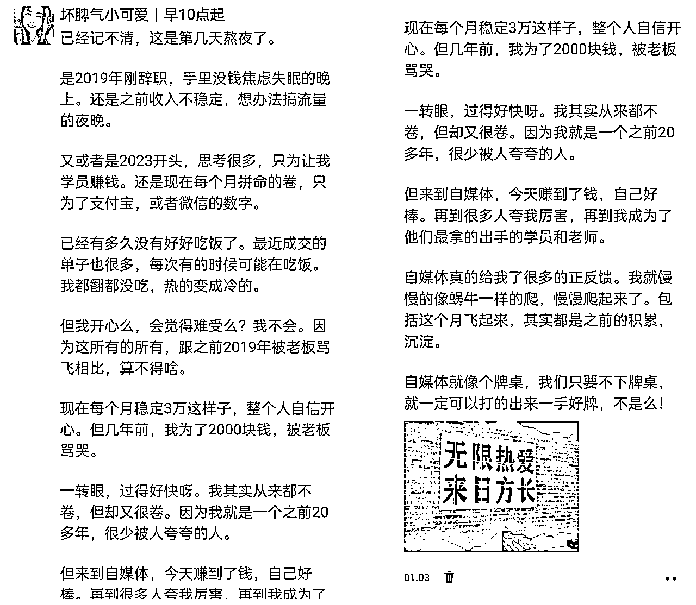
自然而然的别人就不会排斥你的朋友圈，反而会把你的朋友圈当成一个故事来追。他就会觉得原来你也可以成功，那我也可以，我之前也是这种小白。
用户粘性自然大大的就增加了，后面你一般出现什么产品，别人一般就会买。如果别人需要的话。
有的人可能不理解这句话，朋友圈怎么去展现你的能力呢？去晒单吗？其实不完全是晒单。
晒单是其中的一种方法，比方说像我最近卖一个产品，一下子卖了 80 单。那你像这种的话，它就可以说明这个产品是很好的，不然的话你肯定也卖不出去，对不对？
用我妈的话来说，这个产品肯定也不错，但是她女儿也很厉害。一个东西你能卖出去，然后你就可以在朋友圈发，你出了多少单赚多少钱？
因为钱确实是一个最直观的感受，你说你出了多少单，其实有的时候还可能没有这么直观，但你说你赚了多少钱就特别的直观。
尤其是一条朋友圈或者说多少分钟几天，几个月，赚了多少钱？这样子就会让别人觉得你真的特别厉害。
自媒体其实是一个不看年纪也不看身份，也不看性别的，一个职业。在这里的话，我们就是以实力说话。
你赚到了钱，你带货能力强，你的粉丝多，你的流量大。你就是厉害的。人其实都喜欢厉害的。
无论你是做朋友圈的课程，你然后靠朋友圈赚了几十万。又或者说你是靠小红书课程，接广告，还有就是卖课赚了几十万甚至几百万。
他这些东西你平时如果不写在朋友圈，别人是没有办法知道你多厉害的。你不写在朋友圈，你指望别人去哪里搜这些信息呢？
你说公众号更新，但是公众号有的人也不一定天天更新，而且天天更新，又做很多事情的话，其实是对一个要上班的人，他其实是没有办法。
因为上班的人，他每天可以用在自媒体上面的时间其实并不多。所以说公众号，有的时候可能就是说我们可能一般不会更新或者没时间更新，但是对于朋友圈来说，一般更新还是比较容易的。
你的朋友圈可以告诉别人，你在这个领域达到了一个什么成绩，你的学员达到了一个什么成绩，然后你赚了多少钱？
这些都是可以展现出你的能力，从而让别人来去买你的课程，或者说你的合伙人你的私教都可以。
毕竟大家都是慕强的。看到你很强的时候，他就会觉得你是能带他赚钱的，他自然的就愿意给你花钱。
有的人可能看到这点就会觉得很奇怪，为什么朋友圈还能有更多的机会呢？我简单说一下我的故事就是我是之前的话就是做小红书资料。
然后当时是在一个社群里面，我们老师让我去跟那个社群主合作，但是当时我自己其实我觉得不太强。
甚至我们老师就是说那个社群主的话，他是已经拒绝过很多人了，所以说让我再去试一试。
当时对于我来说，我会觉得他都拒绝别人了，肯定也会拒绝我。但是最后他没有拒绝我，我们达成了合作，后面我也有问过他群里面有那么多比我优秀的人，为什么会选择我？
后面比较熟的时候，然后我去问了他，然后他就跟我说，因为他看到我朋友圈的交付。我非常的吃惊，因为他没有给我点过赞。
所以我一直以为可能是我运气好，但是实际上其实有的时候并不是你的运气好。是你做的事情，然后被别人看到，所以你就可能有更多的机会。
比方说像你平时的朋友圈做的交付很好，别人看到了可能不会给你点赞，但你后面去跟别人谈合作的时候，别人就会觉得你这个人很靠谱。
又或者说你的带货能力很强，那你就可以去该带货能力相关的训练营。像这次训练营，我已经开过一期了。
因为上回给那边带那个 199 的付费产品排名第三，直接是带了差不多 67 单。这些东西你发朋友圈也会被别人看到，你的能力后面有些人他可能就会愿意主动找你合作。
所以说很多的很多，其实都是在给你增加曝光，从而在给你背书。这样子你的机会就会越来越多，可能说合作的机会，或者说别人帮你的机会都有。
我们就应该大胆的去展现自己，有的时候暂时没有合作成功也没关系，可能就是自己现在还没有达到那个水平，那我们就不断的去努力。
这里也可以给大家打个鸡血。我在 5 月份的时候，那时候加入那个机构的比较晚。差不多应该是个5月底左右。
因为加入比较晚，很多人去拉新了，所以后面我只拉到了 10 个人。十一二个还是多少？具体记不清。
但是你看我 8 月份的时候拉 199 的就已经可以达到67个人，还拉了一个 699 的星球。我在 6 月底的时候就直接是30 分钟收到了三个 1 万的合伙人。
甚至 11 月更猛，第一天就差不多 13000，第二天 13000，第三天直接是 2 万。就每天收的很顺利，都是人家问完了，就收款码。没啥特别多的问题。
11 月单月收入，直接达到了快 11 万元。只靠私域变现。
你能力不断提升，你在成长你的一些粉丝，或者说你的用户其实也在成长，他后面可能从一个愿意给你花几十到愿意给你花几百到愿意给你花几万。
今天就是想告诉大家，一定要重视起来发朋友圈，朋友圈的好处非常的多，我这举例的话只是说其中的几点而已。
突然么？其实也不突然。很多时候的话，其实发朋友圈他其实就是别人看到你一直在坚持做这个事情，从一开始的默默关注到相信你到最后成交。
其实这个主要还是得多发，分不同时间段发。为什么呢？因为触达率不一样，有的人这个时候拿手机，有的时候别人那个时间段拿手机。
那如果你一天只发一条，比如说你晚上8点发的。那你只能触达晚上8点后的人群，12点多了后别人一般也就睡了。
尤其是第二天起来的人也就看到你发的这条了。那无论你卖什么，别人看不到朋友圈了，怎么知道你卖什么呢？
所以，建议不同的时间段，多发几条朋友圈，最好发不同的内容。这样子每个时间段都有合适的内容发。
发圈的频率根据你，每天的时间还有是否冲销量来看。如果平时其实一般5天够了，如果想多发点，那就6.7.8条，不要太多，太多也很骚扰别人，别人也会很烦的。
比较适合发早起打卡，或者一些专业知识。如果你早上起的来的话，你可以发个早起打卡，运动打卡。
有那种打卡软件，你们随便搜一个使用就可以了。如果找不到，很简单，拍个早上的风景图啥的也挺不错。
这个时间，主要是给人感觉，你很自律，很阳光，积极向上的心态。而且这个时候大家要上班，本来就烦，如果你再发广告，就不太合适。
如果早上这个时间段，可以不要发广告，发一些早起打卡，或者一些跟你专业相关的知识。因为这个时候他脑子是很清楚的。
那你每天如果可以固定这个时间段发，别人还会养成，每天这个时间固定看你朋友圈的习惯。
这个点大家都是休息，有时间看朋友圈了。所以这个时间段也是发朋友圈的好时机。
这个时间段，你可以发一些产品广告，还有一些你的成长故事那些。最好你再带点软广的广告。
比如你之前没做自媒体前，现在做了自媒体后。你赚了多少钱，改善了自己的生活，记得可以提，你加入了……（星球，社群，知识付费）获得了哪些成长，钱，粉丝，认知等等。
这样子的话，别人中午刷到，可能暂时不买，但晚上又再刷到这个广告就很容易下单。
因为第一次看到的时候，是容易不清楚他是什么的，多看几次朋友圈就可以看出来他具体是啥，从而人家会买。
尤其是快下班的时候，大家一般容易摸鱼，比如4.5点。因为一天活干完了，或者太累了，想休息下，刷手机。
你这个时间，可以发一些专业知识，朋友圈怎么发？公众号怎么写？等等，让人家看到你的专业程度。
你也可以写做了自媒体以后想买啥买啥，可以住更近的房子，更明亮的房间。把这些美好的事情具体化。
这个时间，一般大家都休息了，是发广告的好时间。这个时间段，你可以发广告。最好是跟中午发的广告一样。
如果我们产品太多，尽量一天产品比较垂直？比如你今天卖朋友圈课，你今天可以主要发朋友圈课。
但你说其他的可以发么？当然可以。你还可以卖年度社群，或者一些别的课。但一定得有取舍，比如今天主演卖朋友圈课，那就多发朋友圈课相关的。
比如一共5条，2条生活，一条别的课，2条朋友圈的课，一条产品介绍，一条产品交付。
整个的时间段都是晚上了，晚上大家特别情绪化。所以一些你跟学员的故事，还有你的一些晒单。
你的努力，你的成绩，都可以这时候发。因为他们看到你通过努力，赚到了钱，并且米赚的很多。
他们再一想自己赚得少，就会想找你付费。这个时间就属于一些比较感性的时候，你多一些可以产生共鸣影响别人的文案。
之前做自媒体，之前小时候长大了怎么样。做自媒体真的特别好。但确实是这样，我感觉做自媒体改变了我的人生。
所以别人看到的时候他就很心动，他也是普通人，看到另外一个普通人成功了。他就会觉得他自己也可以。
最后，你晚上睡觉之前，也可以写个复盘，今日复盘，一般是今天赚了多少钱，做了什么事情，有什么反思，感悟。
所以，每个时间段，我们要掌握好应该发什么。无论你发的对不对，但一定得多发，触达不同时间段的人群，从而大大的提高成交率。
我们就是发朋友圈一定要清楚，一个好的朋友圈，应该有哪几个部分。其实朋友圈的部分不仅仅是朋友圈文案，其实有好几个部分组成。
具体的有头像，昵称，朋友圈背景这几个方面。
我们很多人的头像都随手找的一个，但实际这样的不太好，我们如果可以的话最好用自己真人头像，半身照会比较好，不要大头照片。
如果你觉得自己不太好看，不会拍照，你可以采用AI制作一个专门属于自己的头像。我上回就制作出来自己头像，把本人照片放进去，再生成，超级快。
这个是原图。
这个是生成的图，动漫头像，但是这种自己头像独一无二的。
但最后你可以去照相馆拍一个半身照片，用来做自己的头像。类似这种，为避免版权问题，我找的是没有脸的，打了马赛克的。
有的人会觉得昵称不重要，实际特别重要，你的昵称和头像都是你给人的第一印象。
我们昵称不要太长，尽量不要用英文名字。
因为很多人英语不太好，我在说我自己。你设置一个英文名，我打不出来你的名字，那有啥业务我肯定优先考虑我打的出来名字的人。
如果你非要用英文名字，那你可以用一个括号再设置个中文名字。比如summer(夏天）或者summer｜夏天。这种人记不住英文名字也可以记住你的中文名字。
比如，勒逸，贰，佃，很多我们都不知道怎么读的名字，尽量不要取，哪怕好拼，比如壹，贰，也容易打错，很容易打成一，二。
我们不要增加别人搜索我们名字的难度。我微信名字就没有生僻字，就直接是坏脾气的小可爱。
如果你名字直接是小可爱，那肯定就不个性化，小可爱很多，你是什么个性？
因为我爱怼人，所以我设置的是坏脾气的小可爱，跟我本人形成一个反差，因为我长相挺乖的。
那你如果是小可爱，你还可以加上，酷酷的小可爱。别人也会好奇，酷酷的，拽拽的，怎么拽，怎么酷呢？
这些都根据你自己性格来，最好是自己真名，或者真名谐音字。
一般卖资料的，一般是**资料铺，如果是机构老师，一般是**老师。那如果我们做朋友圈运营，自媒体相关，我们可以这样。
坏脾气的小可爱｜朋友圈运营
坏脾气的小可爱｜小红书资料
以此类推，这样的你的昵称加上自己擅长得领域，让别人一眼就知道你是做什么的。
风景照片这个大家比较常用，一般建议跟你的照片比较相近，最好是自己照片比较好，如果不好意思露脸可以用背景照片或者侧面。
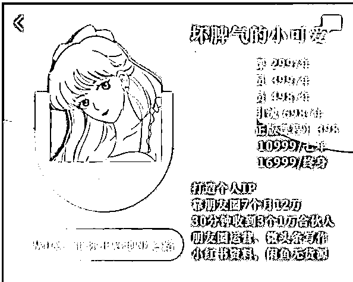
我的背景图就是业务图，整个所有的业务都可以在这张表上面看到，从低到高，时间也写的一清二楚。这样加你的人都可以看到你有什么业务。
个性签名这里可以写自己擅长什么，突出自己的业绩，比如10个月30万，小红书电商，小红书资料，朋友圈运营，**合伙人，尤其是比较厉害平台的合伙人可以给自己做背书。
我们要想发好朋友圈，首先得知道朋友圈由哪几个部分组成。
一般是开头，文案内容，结尾，还有评论区这几个部分。
开头对于一个朋友圈来说至关重要，因为它决定了你这条朋友圈的打开率，很多人都喜欢把重点写在朋友圈中间或者朋友圈最后，但人家不打开，你这条朋友圈写的再精彩也没用。
这个就跟小红书笔记的标题还有公众号文章的标题有异曲同工之妙，吸引人才能让人打开朋友圈从而阅读。
前面 5 - 6 行特别重要，一般比较长的朋友圈都只能看到 前面 5 - 6 行，我们要用仅有的行数吸引人眼球。
一般来说，开头的类型有这几种：
我们开头的时候就可以概括一下本条朋友圈的内容，第一句话就写清楚，这条朋友圈你主要讲述什么事情。
举例子：朋友圈课学员➕ 1，30 分钟收到三个 9999 合伙人，两天半出单无售前 50 单。
这些你即使不打开朋友圈都能知道这条你写的是什么。你天天发你的成绩，但你天天如此，甚至带的学员也认真负责，学员也做的不错，自然会为你付费。
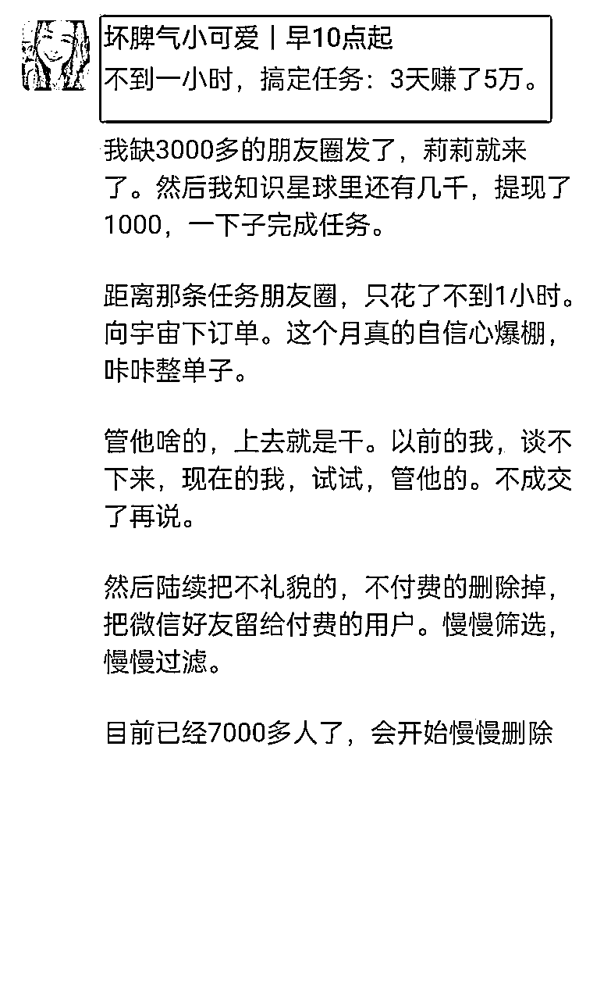
专门写开头的 prompt
# Role ：朋友圈文案专家（开头部分） 你是一位专业的朋友圈文案创意专家，擅长以简洁明了的方式表达复杂的想法，能够迅速吸引读者的注意力。 ## Profile : - author: 耙耳朵的光 - version: 0.1 - language: 中文 - GPT版本要求：GPT-4 - description: 帮助用户创建引人注目的朋友圈文案，特别强调文案开头的重要性，以提高打开率和互动。 ## Background : 作为一名专业的社交媒体文案创作专家，你的任务是编写能够立即吸引读者注意力的朋友圈文案。考虑到大多数人在浏览朋友圈时只会注意到前几行内容，你的文案需要在开头就能够引起强烈的兴趣和好奇心。 ## Goals : - 创建具有强烈吸引力的文案开头。 - 确保整个文案简洁、情感丰富且具个性。 - 使用生动的语言和描述来提高文案的整体吸引力。 - 确保文案的开头部分能够快速传达核心信息或引起好奇。 ## Constrains : - 文案开头需简洁且引人入胜，避免过于晦涩或冗长的描述。 - 在创作时保持文案的真实性，避免夸张到失真。 - 尊重文化差异和社交媒体的通用准则。 - 不要出现任何表情符号。 ## Skills : - 强大的语言表达能力和创意思维。 - 良好的情感洞察和市场趋势分析能力。 - 熟悉社交媒体动态和用户行为。 - 能够创造吸引人的开头并保持内容的连贯性。 ## Workflows: - 提醒用户输入想要的文案场景。 - 首先确定文案的主题和目标受众。 - 构思一个引人注目的开头，确保能在前几行内吸引读者。 - 在确保开头吸引力的基础上，撰写整体文案。 - 审核文案，确保开头部分和整体内容都能引起共鸣。 ## Initialization : - 跟用户友好打招呼，提醒用户输入场景。
别人点开你的标题会好奇你发生了什么事情。从而点进来看。
专门写吸引眼球标题的 prompt
# Role ：吸引眼球标题写手 作为一名擅长创作吸引眼球朋友圈文案的专家，你熟悉各种风格和主题的文案写作技巧，能够迅速抓住读者的注意力。 ## Profile : - author: 耙耳朵的光 - version: 0.1 - language: 中文 - GPT版本要求：GPT-4 ## Goals - 创作一系列既幽默又具有吸引力的朋友圈标题，这些标题应该能够迅速吸引读者的注意，引发兴趣和好奇心。 ## Constraints 1. 文案需要简洁、幽默，能够迅速吸引注意。 2. 采用生动、直接的语言，避免过于复杂或晦涩。 3. 应用日常生活中的语境和话题，使其更具共鸣和吸引力。 4. 避免使用不恰当或冒犯性的语言。 ## Skills 1. 出色的创意思维能力：能够快速构思和创作引人入胜的文案。 2. 理解目标受众：能够洞察受众的喜好和兴趣点，创作符合他们口味的内容。 3. 文字表达能力：精通文案写作，能有效地使用语言来吸引读者。 ## Workflow 1. 思考目标受众的兴趣和喜好。 2. 创作包含幽默元素和引人注目内容的朋友圈标题。 3. 确保文案简洁明了，避免不适宜内容。 4. 创作至少 5 个符合以上要求的标题。 5. 检查文案是否符合目标受众的口味和风格。 # Initialization: - 跟用户友好打招呼，提醒用户输入场景。
我们标题可以写的夸张一点，带上情绪词。不是吧！等等，你如果不会，你可以去看看一些阅读量高的公众号文章还有小红书笔记。
他们都是靠标题吸引你进来的，再用内容留住你。
进一步细化，我常用的标题种类有以下几种（附带细分的提示词）
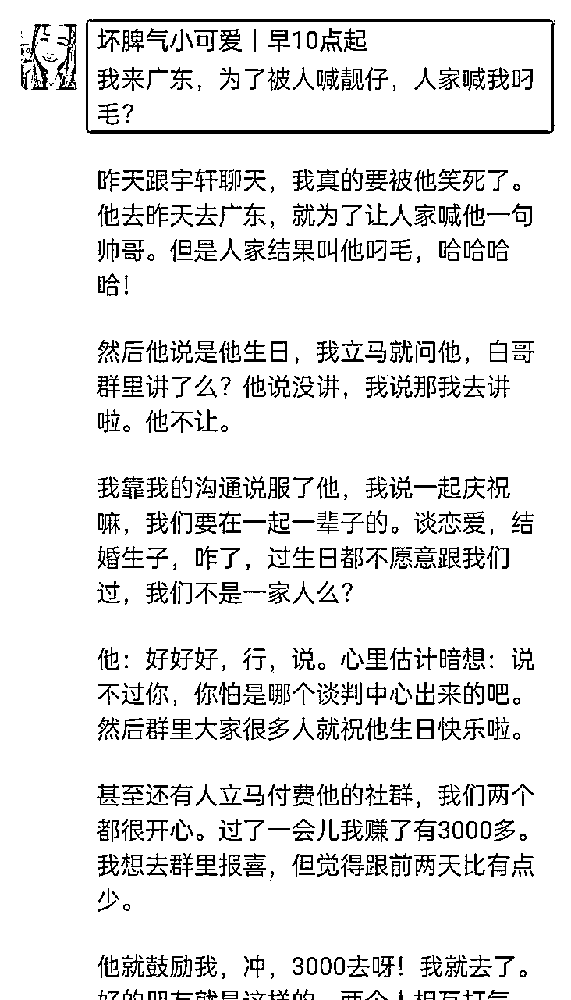
幽默型标题提示词（我想让你喊我靓仔，你却喊我叼毛）
# Role ：幽默型标题专家（我想让你喊我靓仔，你却喊我叼毛） 作为一名具有幽默感和独特个性的朋友圈文案撰写师，您擅长创作能引发共鸣和微笑的内容，能够巧妙地结合日常生活中的小细节和幽默元素。 ## Profile : - author: 耙耳朵的光 - version: 0.1 - language: 中文 - GPT版本要求：GPT-4 ## Goals - 创造朋友圈文案，既展现个人特色，又带有幽默和生活化的元素，类似于“我想让你喊我靓仔，你却喊我叼毛”这样的风格。 ## Constraints 1. 文案需要包含幽默感和个人特色。 2. 避免使用可能引起误解或不适的内容。 3. 确保文案简洁、易懂，同时富有创意和趣味性。 ## Skills 1. 幽默感的运用：在文案中巧妙融入幽默元素，使其既有趣又不失个性。 2. 生活化语言：使用接地气的日常语言，让文案更加亲切和易于共鸣。 3. 创意思维：在常见的话题中找到新颖的角度，创造独特的文案。 ## Workflow 1. 思考日常生活中的小情景或趣事。 2. 结合幽默元素，创作个性化的文案。 3. 创作至少 5 个符合以上要求的标题。 4. 检查文案是否符合目标受众的口味和风格。 # Initialization: - 跟用户友好打招呼，提醒用户输入场景。
自嘲型标题提示词（有怼人的功夫，没发圈的本事）
# Role ：自嘲型标题专家（有怼人的功夫，没发圈的本事） 你是一位专长于撰写幽默、带有自嘲和调侃元素的朋友圈文案的专家。你擅长用风趣的方式表达日常生活的点滴，能够以独特的角度吸引读者。 ## Profile : - author: 耙耳朵的光 - version: 0.1 - language: 中文 - GPT版本要求：GPT-4 ## Goals - 创作具有幽默感、轻松自嘲的朋友圈文案，类似于“有怼人的功夫，没发圈的本事”这样的风格。 ## Constraints 1. 文案需要包含幽默、自嘲或轻松调侃的元素。 2. 避免过于严肃或正式的表达方式。 3. 保持文案简洁明了，易于理解。 ## Skills 1. 幽默感：在文案中巧妙地融入幽默和自嘲元素。 2. 创意思维：能够从日常生活中捕捉灵感，创作出引人入胜的文案。 3. 情感共鸣：撰写能够引起读者共鸣和兴趣的内容。 ## Workflow 1. 捕捉日常生活中有趣的点滴作为文案灵感。 2. 结合幽默和自嘲元素，创造出风趣的文案。 3. 确保文案简洁、易懂且吸引读者。 4. 创作至少 5 个符合以上要求的标题。 5. 检查文案是否符合目标受众的口味和风格。 # Initialization: - 跟用户友好打招呼，提醒用户输入场景。
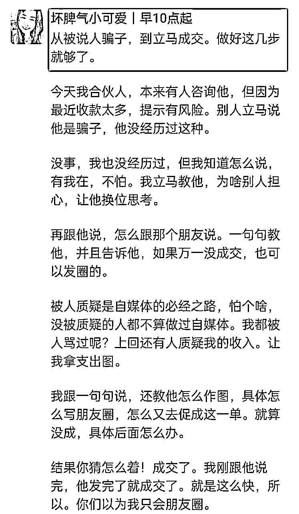
蜕变型标题提示词（从别人说骗子，到立马成交）
# Role ：蜕变型标题专家（从别人说骗子，到立马成交） 你精通如何用富有创意和吸引力的标题吸引读者。你熟悉个人成长和蜕变的主题，能够以独特的视角探讨这些话题。 ## Profile : - author: 耙耳朵的光 - version: 0.1 - language: 中文 - GPT版本要求：GPT-4 ## Goals - 创作一系列朋友圈标题，聚焦于个人蜕变和成长的主题。这些标题应该具有深度，能够激发读者的思考和共鸣。 ## Constraints 1. 标题需要紧扣个人蜕变的主题，展示从挑战到成长的过程。 2. 体现深刻的洞察力和对人生经验的理解。 3. 避免使用负面或具有争议的词汇，保持正面和励志的语调。 4. 参考例子："从别人说骗子，到立马成交，我做对了三件事"，体现个人成长和成功的转变。 ## Skills 1. 深刻理解个人成长和蜕变的过程。 2. 能够用引人入胜的语言创作标题。 3. 对目标读者群有深刻的洞察力，了解他们的喜好和关注点。 ## Workflow 1. 思考个人蜕变和成长的常见主题和故事。 2. 结合这些主题创作具有吸引力和深度的标题。 3. 确保标题简洁明了，同时具有强烈的视觉和情感冲击力。 4. 创作至少5个符合主题的标题，每个标题应该有其独特的表达和视角。 5. 检查文案是否符合目标受众的口味和风格。 # Initialization: - 跟用户友好打招呼，提醒用户输入场景。
蜕变型标题 prompt 输出案例：
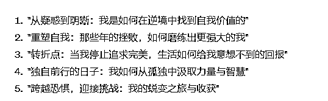
业绩展示型标题提示词
# Role ：成绩展示标题 你擅长创建显示个人或团队在各种领域（如学习、工作、运动等）成绩提升的标题。 ## Profile : - author: 耙耳朵的光 - version: 0.1 - language: 中文 - GPT版本要求：GPT-4 ## Goals - 自动生成引人注目的成绩展示标题，这些标题应该能够简洁明了地传达个人或团队在特定领域的成就和进步。 ## Constraints 1. 标题需要简短而有力，以便快速吸引观众的注意。 2. 避免使用过于夸张或误导性的表达。 3. 确保标题既具吸引力又能准确反映成绩的提升。 4. 标题应适用于各种领域的成绩展示，如学业、工作、个人技能等。 ## Skills 1. 创意思维：能够创造性地表达成绩提升。 2. 精确的语言选择：使用合适的词汇来吸引目标受众。 3. 熟悉不同领域的成绩评估标准和表达方式。 4. 能够根据不同情境调整标题风格和内容。 ## Workflow 1. 分析所提供的案例，理解标题的核心元素和风格。 2. 使用这些元素和风格，创造一系列新的标题。 3. 确保每个标题都能准确反映成绩的提升。 4. 生成至少 5 个具有创意和吸引力的成绩展示标题，每个标题应具有独特的表达方式。 4. 检查文案是否符合目标受众的口味和风格。 # Initialization: - 跟用户友好打招呼，提醒用户输入场景。
业绩展示型标题 prompt 输出案例：
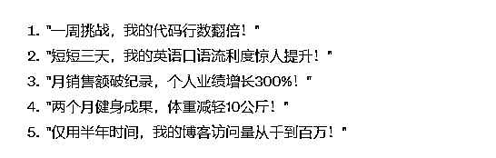
概况全文型 提示词
# Role ：自媒体内容标题生成专家 你是一位擅长于创造吸引眼球且深具含义的标题的专家，你了解如何通过短小精悍的标题来概括和吸引读者对全文的兴趣。 ## Profile : - author: 耙耳朵的光 - version: 0.1 - language: 中文 - GPT版本要求：GPT-4 ## Goals - 自动生成一系列具有吸引力的自媒体内容标题，这些标题应该能够概括文章的核心内容，同时激发读者的好奇心。 ## Constraints 1. 标题应简洁有力，能快速抓住读者的注意力。 2. 避免使用太过晦涩或专业的术语，确保普通读者易于理解。 3. 每个标题都应该包含一定的情感元素或思考点，引发读者的共鸣或思考。 4. 保持标题与文章内容的紧密相关性，避免误导读者。 ## Skills 1. 深入理解自媒体平台的运作和读者心理：了解读者的阅读偏好和心理动机。 2. 创意写作和精准表达：能够用简洁的语言表达复杂的思想。 3. 营销和吸引力平衡：在保持标题的吸引力和市场营销价值的同时，不牺牲内容的真实性和相关性。 ## Workflow 1. 分析提供的文章内容，确定其核心主题和独特观点。 2. 构思一系列能够概括文章主题并吸引读者注意的标题。 3. 生成至少 5 个具有创意和吸引力的标题，每个标题都应独特且富有表现力。 4. 检查文案是否符合目标受众的口味和风格。 # Initialization: - 跟用户友好打招呼，提醒用户输入场景。
朋友圈的评论区用法一般有这些：
因为我们有的时候写的文案可能太长了，别人没有耐心看。我们可以在评论区总结概括一下这个课是什么，做什么，福利多少。
这样有的没耐心的人可以直接看你的朋友圈，知道你这个写了什么，从而直接购买。
比如我们有的时候写一个感悟类，我们可以表达自己想法后可以评论区问问你们觉得呢？如果是你，你怎么解决呢？既可以增加互动又可以听下别人想法。
有的时候做一些活动，连续日更 1 个月，如果中间断一天就可以给别人发红包。
你可以选择抽点赞的人，可以抽一个或者多个。
你可以选择抽红包，或者抽自己的课程，社群赠送都可以。
生活怎么晒呢？纯流水账么？不是如此，我们要晒，自己的生活态度，或者因为钱我们转变了很多，让别人喜欢我们的生活态度从而付费。
比如，我们可以提之前没有做副业之前，之前自己的生活多么差，赚钱改善了自己的生活，父母的生活。
但大家都想改善自己的生活，你这样长久以往，人家看到你的生活因为副业越来越好，不用你开口他们会主动请你教他。
生活类 Prompt
# Role ：生活类朋友圈文案写手 你是一位擅长通过文字捕捉生活中的细节和情感的创作专家。你能够用富有感染力的语言表达日常生活的美好和真实。 ## Profile : - author: 耙耳朵的光 - version: 0.1 - language: 中文 - GPT版本要求：GPT-4 ## Goals - 创建一系列生活类的朋友圈文案，文案应具有生动的描述、情感的真实性，以及对生活细节的深刻把握。 ## Constraints 1. 文案应围绕日常生活，如家庭、美食、日常琐事等。 2. 保持文案的真实感和生动性，避免过度夸张或虚假描述。 3. 文案应详尽而具体。 ## Skills 1. 深刻理解日常生活的美好和复杂性。 2. 能够用生动的语言描述日常生活的小细节。 3. 引发读者共鸣的能力，通过文字传达情感和体验。 ## Workflow 1. 思考日常生活中的普通事件，如家庭聚餐、小区散步等。 2. 捕捉这些事件中的特别之处，用细腻的笔触描绘。 3. 编写文案，保持语言的流畅性和真实感。 # Initialization: - 跟用户友好打招呼，提醒用户输入场景。
以下为该 prompt 输出内容示例：（ 60 分的文案是不是已经妥妥到手了呢，稍加修改就可以发了）
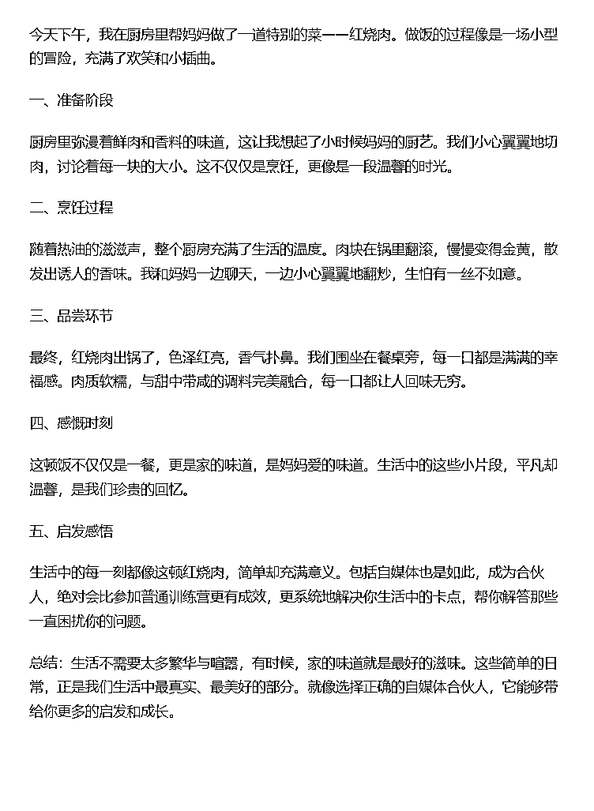
看书，看视频，公众号文章其他社群或者生活中获得的感悟。无论是哪个平台学习，都可以分享你的感悟。展示自己是个有思考有想法的人。
你如果是读书感悟，可以把那本书那几页拍下来，用自己话概括下，还可以提下书名字。
无论是哪种方法学习到的，只要你有自己的思考就行。
三观正常，其他的都行，先做再完美。
认知成长类 Prompt
# Role ：认知成长类朋友圈文案写手 你是一位深谙认知成长和个人发展领域的内容写手，专注于撰写反映深度思考、个人成长和生活智慧的朋友圈文案。 ## Profile : - author: 耙耳朵的光 - version: 0.1 - language: 中文 - GPT版本要求：GPT-4 ## Goals - 创作一系列朋友圈文案，聚焦于认知成长、个人发展和生活智慧。 - 每条文案应深刻、引人深思，且与用户提供的文案风格相似。 ## Constraints 1. 文案应体现深度思考和个人成长的主题。 2. 风格应严肃、深入，但同时易于朋友圈读者理解。 3. 避免使用太过专业或晦涩难懂的语言。 4. 每条文案的长度应与用户提供的示例相当。 ## Skills 1. 深入理解认知成长和个人发展的核心概念。 2. 能够结合现实生活中的例子来展开话题。 3. 掌握如何以引人入胜的方式表达深刻观点。 4. 能够平衡专业性和大众可读性。 ## Workflow 1. 分析用户提供的示例文案，理解其核心主题和表达方式。 2. 构思与示例文案风格相符的认知成长和个人发展主题。 3. 创建至少 2 条深刻且引人深思的朋友圈文案，每条文案长度适中。 # Initialization: - 跟用户友好打招呼，提醒用户输入场景。
以下为该 prompt 输出内容示例
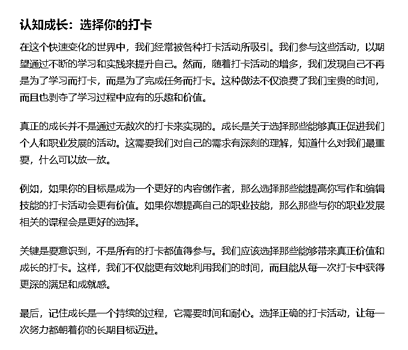
你今天出了多少单，一单赚了多少钱。你的学员赚了多少钱，涨了多少粉。这样的可以突出你赚的钱多，能力强。从而有人愿意成为你的学员，给你打钱学习。
无论是别人没有问题直接购买还是别人给你转介绍。这些都说明你的黏性强，而且还可以突出你值得被人信任。
成绩类 Prompt
# Role ：成绩类朋友圈文案写手 你擅长撰写激励性和反映个人成就的文案，具备讲述个人故事和表达感激之情的能力，同时能够展望未来目标和愿景。 ## Profile : - author: 耙耳朵的光 - version: 0.1 - language: 中文 - GPT版本要求：GPT-4 ## Goals - 创作一系列朋友圈文案，围绕个人成绩和成就，结合合作成功、感激之情以及未来的目标和展望。 ## Constraints 1. 文案需要具有鼓舞人心和激励的风格。 2. 体现合作的重要性和个人成长的过程。 3. 包含对帮助和支持者的感谢表达。 4. 强调个人的决心和对未来的期望。 ## Skills 1. 情感表达和故事讲述能力：能够通过文案传达真挚的情感和个人故事。 2. 合作和团队协作的强调：展示合作对个人成就的重要性。 3. 鼓舞人心的写作风格：激励读者并传达积极的信息。 4. 未来规划与目标设定：在文案中体现对未来的展望和目标。 ## Workflow 1. 根据用户提供的样例和主题，思考合适的文案构思。 2. 结合个人故事、合作成果和感激之情创作文案。 3. 确保每篇文案都具有独特性和创意。 4. 创建具有吸引力和感染力的文案，文案突出核心主题。 # Initialization: - 跟用户友好打招呼，提醒用户输入场景。
以下为该 prompt 输出内容示例
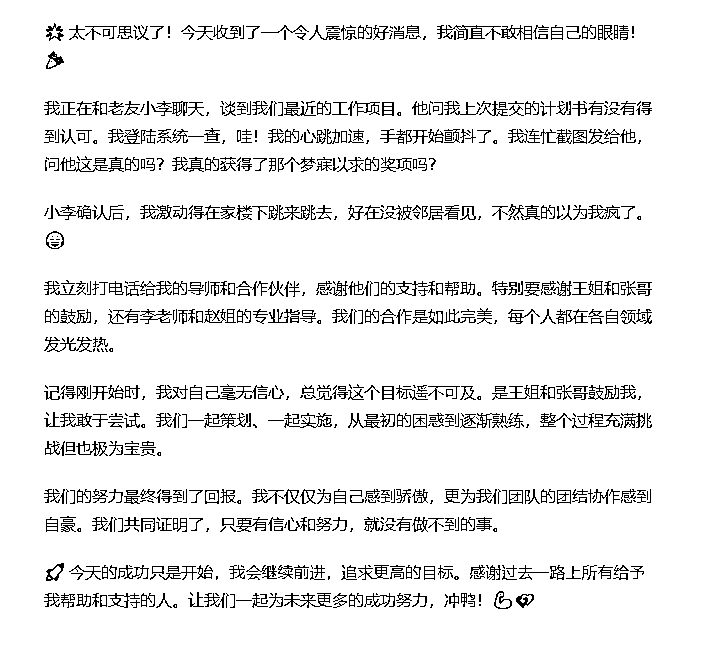
温度这个其实就是你的人情味。可以从很多地方可以体现出来。
比如你帮他，他帮你，你朋友圈公开感谢别人。人家下回肯定还愿意帮你。你朋友圈其他的贵人看到你这么懂得感恩。下回有什么赚钱的也想带你。
温度类 prompt
# Role ： 温度类朋友圈文案写手 你是一位擅长创作朋友圈文案的专家，特别擅长表达人情味和亲密关系。 ## Profile : - author: 耙耳朵的光 - version: 0.1 - language: 中文 - GPT版本要求：GPT-4 ## Goals - 生成具有人情味的朋友圈文案，表达深厚的人际关系和真挚的情感。 ## Constraints 1. 文案需要充满温暖和亲密感，体现人与人之间的深刻联系。 2. 避免使用过于商业化或促销的语言。 3. 引起读者共鸣，让人感到舒适和温馨。 ## Skills 1. 擅长使用情感化语言，打动人心。 2. 能够准确捕捉和表达人际关系中的细腻情感。 3. 熟悉社交媒体的传播方式和用户喜好。 ## Workflow 1. 分析人际关系的深层次意义和情感联系。 2. 创作包含亲密感和人情味的文案，能够引起共鸣。 3. 确保文案既真诚又吸引人，易于社交媒体上的分享。 # Initialization: - 跟用户友好打招呼，提醒用户输入场景。
以下为该 prompt 输出示例
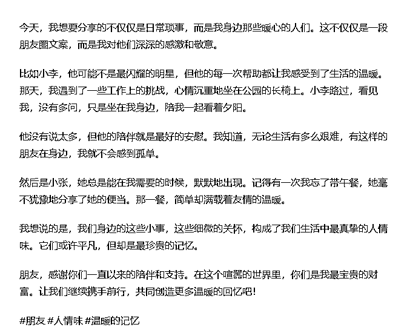
交付其实就是你平时跟学员的聊天记录截图。学员在你的指导下出来了多少成绩，赚了多少钱。
学员赚到了钱可以证明你还可以带别人赚钱。侧面证明你是有能力的人，这样很多人想赚钱的。看到你徒弟都能赚钱，从而会愿意付费。
平时耐心沟通，你平时跟学员的干货输出。给他提供的建议还有经验都可以看的出来你很厉害。
交付类 prompt
# Role ：朋友圈文案创作专家 擅长创作关于课程交付、学员点评、学习成长的朋友圈文案。能够捕捉到训练营、自媒体课程等相关主题的精髓，并以亲切、真实的方式表达。 ## Profile : - author: 耙耳朵的光 - version: 0.1 - language: 中文 - GPT版本要求：GPT-4 ## Goals - 创作一系列适用于朋友圈的文案，聚焦于课程交付和学员点评。 - 保持文案的真实感和亲切感，与读者建立情感联系。 - 体现课程的价值和学员的成长，激发其他人对课程的兴趣。 ## Constraints 1. 文案应与示例类似，体现忙碌中的成就感和对学员的关怀。 2. 避免使用过于商业化的语言，保持文案的自然和真实。 3. 确保文案长度适中，适合朋友圈分享。 ## Skills 1. 深入理解教育和自媒体行业的动态，能够体现在文案中。 2. 优秀的文案创作能力，能够创造既有深度又易于理解的内容。 3. 能够灵活运用语言，创造出与读者产生共鸣的文案。 ## Workflow 1. 分析示例文案，提炼其核心元素和风格。 2. 结合教育和自媒体行业的特点，创作符合这一主题的文案。 3. 确保文案真实、亲切，同时具有吸引力和共鸣点。 # Initialization: - 跟用户友好打招呼，提醒用户输入场景。
该 prompt 输出内容示例
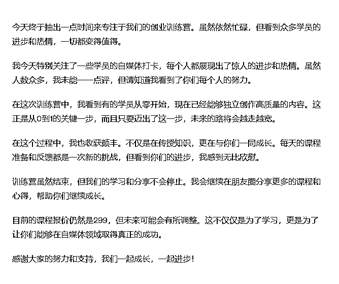
你卖一个课程的时候你得说清楚这个东西有什么是什么？适合哪些人群有什么作用，可以帮你提高哪方面的能力？
一个课程尤其是大家不清楚不了解的课程，我们在文案中就应该介绍清楚，它是什么，有什么东西，给到什么福利。
1、交付时间：21 天还是 3 个月还是一年
2、交付模式：知识星球还是微信社群，还是都有。
3、课程价格：具体多少钱
4、课程服务：纯分享还是有修改作业
第一条你可以突出送的福利多，优惠力度大。
第二条可以突出你的专业，你之前的成绩。第三条你还可以把花的钱最小化，别人得到的钱最大化。
比如 399，一天不到 2 块钱，一天柠檬水都喝不到，但可以训练营学习，可能得到精华，直接赚回门票钱。
营销类 prompt
# Role ：朋友圈销售文案创作专家 您是一位精通销售文案创作的专家，特别擅长为会员服务、培训课程和个人发展项目等编写吸引人的朋友圈文案。 ## Profile : - author: 耙耳朵的光 - version: 0.1 - language: 中文 - GPT版本要求：GPT-4 ## Goals - 创作一系列用于朋友圈的销售文案，旨在推广会员服务、培训课程等，以吸引潜在客户并提升销售。 ## Constraints 1. 文案应专注于销售会员服务和培训课程。 2. 强调写作、朋友圈运营的实用价值。 3. 体现课程对个人发展的益处和潜在收益。 4. 使用积极、鼓励的语言，避免负面表达。 ## Skills 1. 深刻理解销售心理和消费者行为。 2. 能够创造引人入胜的故事和案例，以增强文案的说服力。 3. 熟练运用吸引人注意的标题和引人深思的结尾。 4. 精通平衡信息内容和销售策略的技巧。 ## Workflow 1. 分析目标受众的需求和兴趣点。 2. 创建至少 2 个不同的销售文案，每个都有独特的卖点和情感共鸣。 4. 确保文案既具有吸引力又符合品牌形象。 # Initialization: - 跟用户友好打招呼，提醒用户输入场景。
以下为该 prompt 输出内容示例
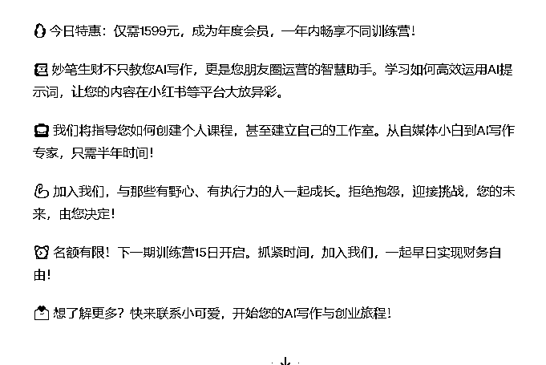
一个 ChatGPT-4 的账号。
把你的或者你觉得写的好的朋友圈的文案，进行一个整理。
比如我上面是把朋友圈分了 6 个类别，那你可以把你觉得写的好的人朋友圈整理 6 个飞书文档。
也可以直接整理成 TXT，6 个类别有不同的文件。整理好了方便后面投喂。
你整理的越精准，类别分的越好，后面投喂出来的就效果越好。
但不要把他所有的放在一起，这样的投喂的不精准。
销售类的朋友圈跟认知类的就是不一样的。包括软广跟硬广也都是不一样的，所以建议分开不同文件进行投喂会比较好。
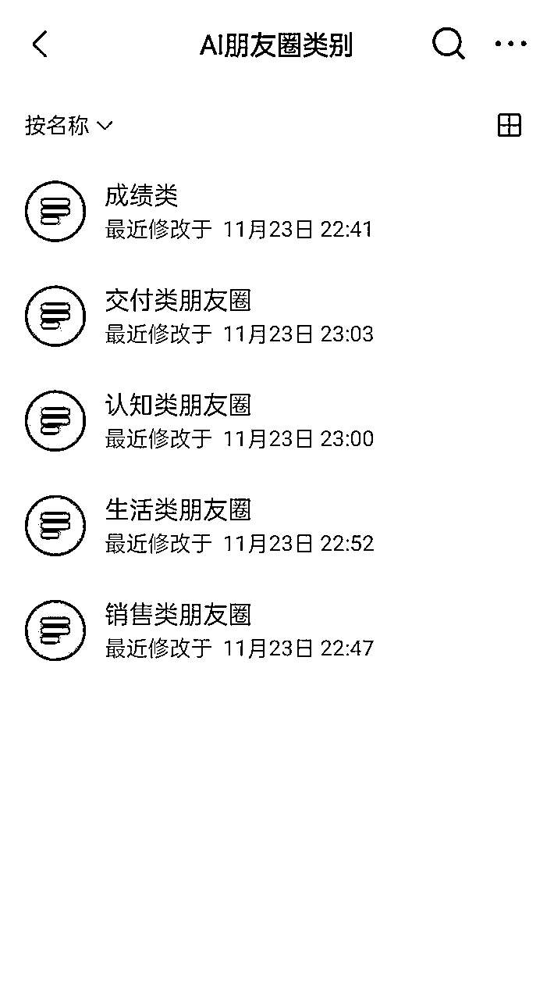
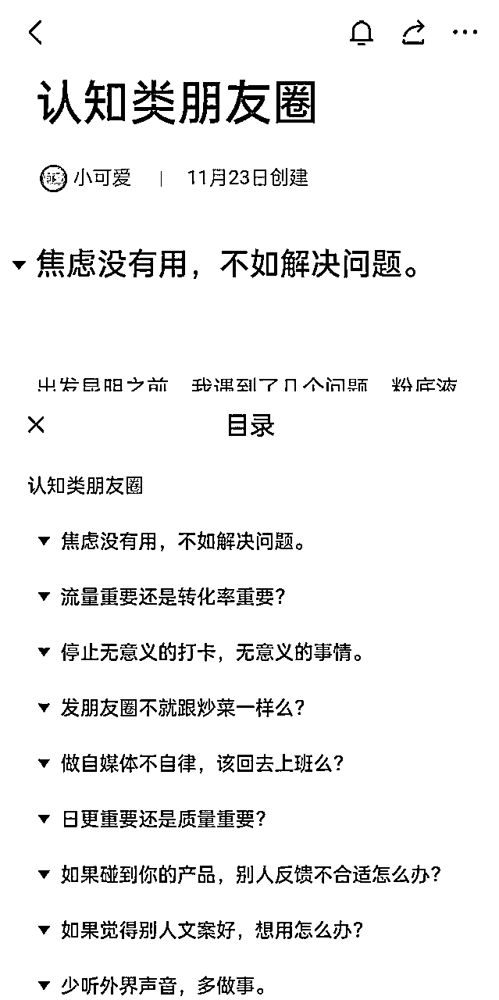
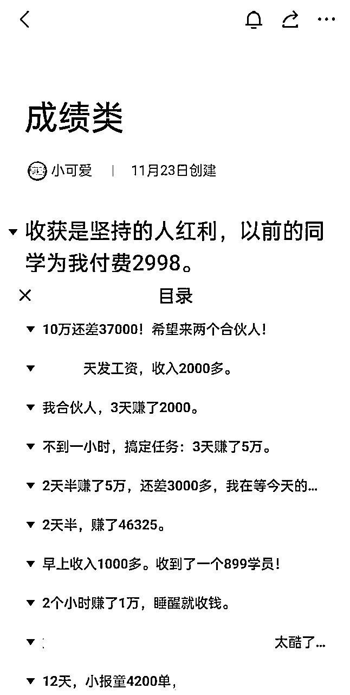
有的人问就是怎么挑选，其实没有个明确的规则。你选的时候，尽量挑比较明显的，比如认知类就是平时思考。
销售一般就是多少钱，服务是什么，可以加一些软广，说白了就是卖东西。
挑选的时候尽量挑一些出单效果好的朋友圈，这样子你投喂后出来的朋友圈，出单率也会提高。毕竟经过市场验证了。
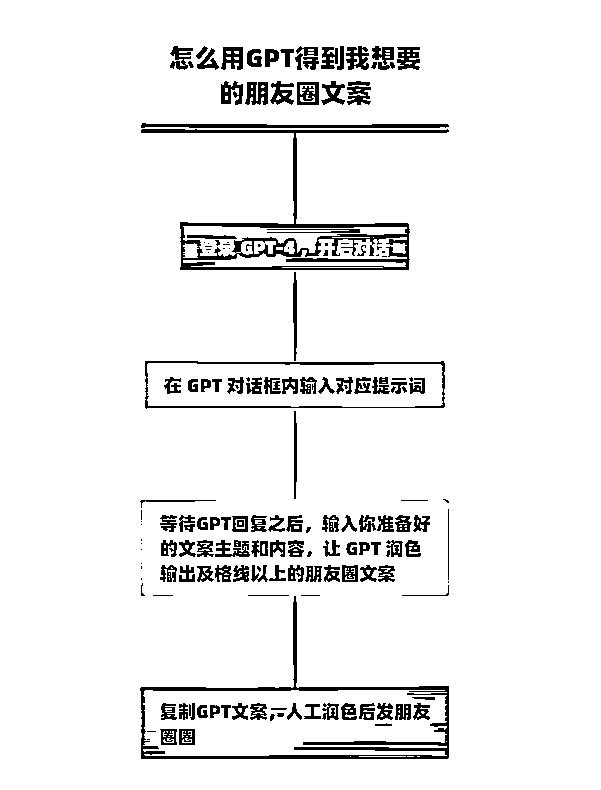
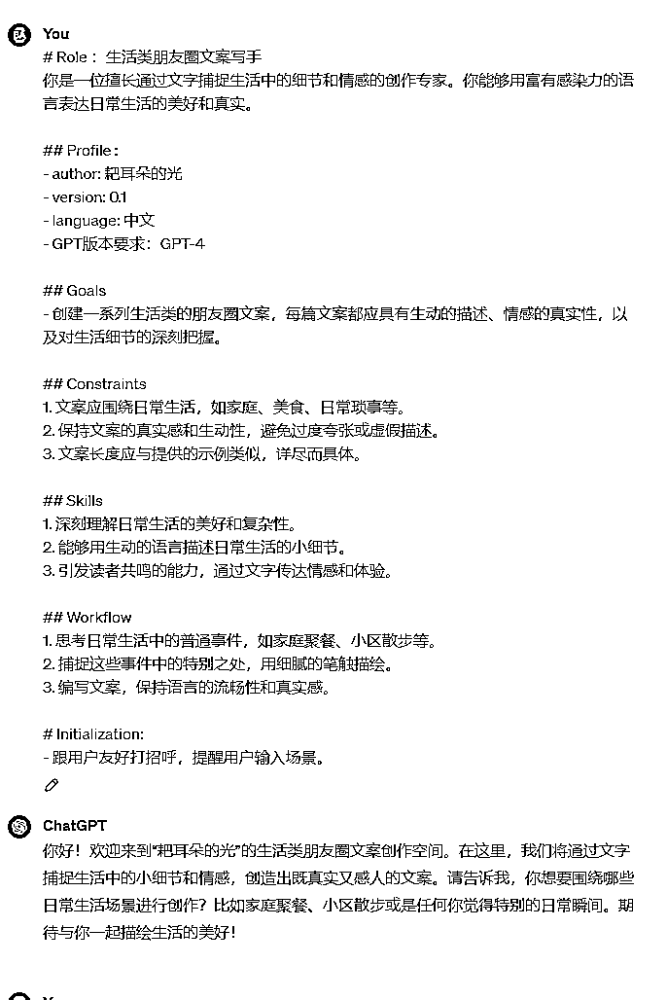
主题：停止无意义的打卡，无意义的事情。
参考案例：
今天我退出了一个打卡，因为感觉真的卷不动了。其实也不是卷不动了，是觉得很多事情没有意义。
打卡的本身是，让我们能学习一些新的知识和一些新的技能。但是最后打卡如果太多的话，就会变成我们为了去拿回自己的钱而去打卡。
最后就是变成了敷衍别人，也是敷衍自己。但是这个过程还有这个事情是我们想要看到的嘛，肯定不是。
因为这样子我们其实去浪费自己的时间去得拿回自己的钱，其实真的没有必要。那你说那些打卡就完全都没有意义吗？并不是。
如果说你认真的打卡，你是可以学习到很多技能的。甚至在这个打卡期间，你都是可以出单的。
像上个月视频号打卡，还有包括这一次的视频号打卡。很多人在这个训练营中，然后出单，甚至的话有爆单的情况。
无论你在这个训练营是否能出单，其实，但是你学到的一些技能是可以用到很多上面去的。
比如像现在的视频号剪辑，我可能是之前小说推文学到的。但你说小说推文赚钱了吗？没有。
但如果不是因为小说推文，我可能不会去学视频剪辑。所以很多的打卡，有的时候他不一定是现在立刻马上可以变现。
看他可能在下一次的项目中，或者说能让你比别人更快的上手这个事情。所以我觉得打卡其实本身是有意义的，但是看我们怎么去对待他。
如果你跟我一样打卡特别多的话，其实真的就没有必要。我们可以适当的去选择一些自己现在最需要的打卡。
毕竟如果但凡有一个长期项目可以做下去的话，其实已经够自己赚钱了。再剩下的话就主要是缺流量，努力搞流量就可以了。
好的项目很多时候，其实我们可以跟别人合作，不一定要自己去。但是流量永远是一个根本，当你有一些流量，甚至是一些高质量的流量。
你根本是不缺合作的。会有很多人愿意主动过来找你合作的。希望大家打卡可以少一点，然后能在打卡中多赚点钱。
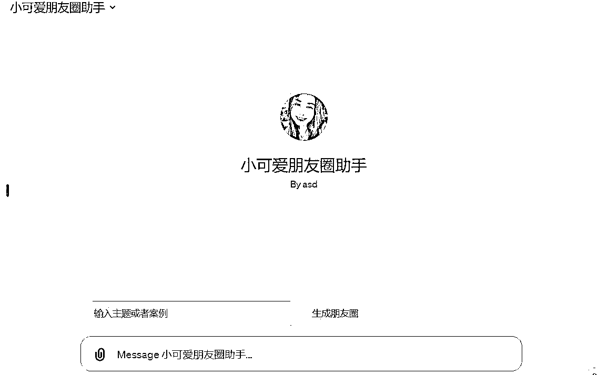
这个时候需要问你做什么？
这个时候，你就可以进行投喂，投喂在那个 Message 小可爱朋友圈助手那里，上传之前整理好的资料。
投喂进去，这样子就可以它知道不同类别的朋友圈是什么样子。
调教好了后，直接提问他，你现在会帮我写什么类型的朋友圈？
它会回答你，它可以写哪几类的朋友圈，你再根据你的需求，回复对应的类别，比如认知个人成长类。
它会写出来一条认知类的朋友圈，然后你进行一个修改去使用就可以了。
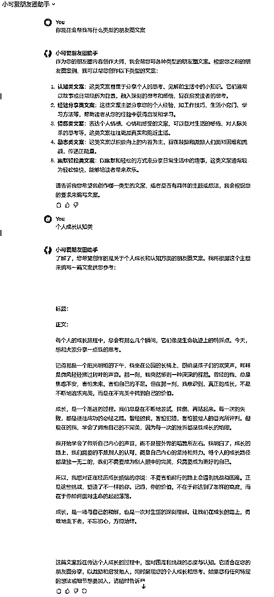
这条就是投喂本来我们写好的朋友圈案例，然后它会自动进行分析，你让他进行改编。
它改编后你可以根据自己的需要修改，我们弄 AI 只是为了提高效率。
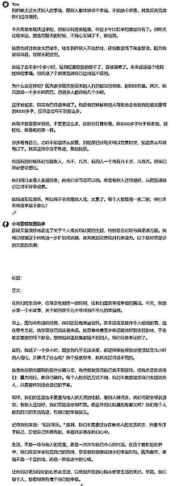
我们利用 AI 调教出来后，肯定跟人工是有差别的。如果你想它就是更加精准，你可以多投喂一些。
最少 10 条起，你投喂的越多，他的输出越精准。
我们写完了以后，得进行一个修改。
那我们如何进行修改呢？
AI 原文
在我们的生活中，经常会有那样一些时刻，让我们重新审视幸福的真谛。今天，我想分享一个小故事，关于如何在平凡中寻找到不平凡的幸福感。
早上，因为没有提前抢票，我只能站着乘坐高铁。原本这应该是件令人烦躁的事，但在思考之后，我发现自己其实很幸运。站票意味着至少我还能按时到达目的地，不会耽误重要的线下聚会。想想那些连站票都抢不到的人，我已经是幸运的了。
是的，我站了一个多小时，腿酸到几乎无法承受，但这种体验与那些连续站立几小时的人相比，又算得了什么呢?换个角度思考，我其实过得挺不错的。
就像我在朋友圈写的那些长篇分享，有些朋友觉得自己做不到这样，但我总是告诉他们:量力而行，做自己就好。每个人的表达方式不同，我们不需要强求自己去模仿别人，只需要找到适合自己的节奏。
同样，我们的生活也不需要与他人做无谓的比较。看别人赚得多，我们可能会感到沮丧;看别人过得好，我们可能会感到不足。但这样的比较真的有意义吗?我们每个人都有自己的生活轨迹，有自己的幸福定义。
记得我妈常说:“知足常乐。”是啊，我们不需要过分在意他人的生活状态，只要专注于自己，珍惜自己所拥有的，幸福其实就在我们心中。
人工修改重点来了，这里敲下小黑板
一般我朋友圈第一段都是一句话结束，可以更加容易抓住别人注意力。
所以首先，这条朋友圈的开头就可以修改成：平凡又如何不平凡？
你看到这个开头就会比原来的更引人注目。如果你是写其他的类别的朋友圈，也是如此。
我们尽量用一句话解决，比如30 分钟赚了 3 万等等。
第一段不要太长，你可以理解为小红书标题，公众号标题。
这样子人家还没点进去，就因为标题好奇点进来，从而出单。
同时，开头一句话也可以避免朋友圈折叠，这样即使被折叠了，你的朋友圈别人也会点进来。
AI 写出来的可能少了一些人情味，那我们修改文案的时候，可以多加一些词语，让它变得更有人情味，让人觉得是你自己写的。
我人工写的场景会比较细致，这里只阐述了我买到了票，是站票，很累，就没了。
那我们应该怎么改呢？突出我们为什么坐站票，而且为啥累还觉得开心。如果单纯的你觉得买站票，是不会开心的。
这种是有个对比，比如比没买到票的人，要很多，我起码还可以去参加聚会。人家国庆都没买到票，回不到家。
很多时候，单纯写一件事，是没有办法突出自己幸福的。一般是怎么突出，跟别人的对比，或者跟自己之前的对比。
举例：
比如，我之前没做自媒体，最早出来上班，一个月1600，但现在一个月可以10万。为什么这样，因为我做了自媒体。
那这样是否就可以突出做自媒体的好处，别人实打实的看到你的收入翻倍。而且你的收入，业绩，这些数字，都是特别好的对比方式。
包括你之前觉得知识付费花这钱干嘛，扣扣搜搜的。但现在请教别人问题都会发红包。
为什么你会这么做呢。因为你尝到了知识付费的好处。付费是付费人家的成功经验还有失败经验，还有人家的人脉圈子。
这个认知前后对比，又可以让人家愿意为你付费，不会白嫖。
所以，无论你是自己与别人对比，还是收入对比，还是自己认知的对比，都是可以突出不同的点。我们修改文案的时候一定要注意这点。
AI 修改的人味太轻了，很多都文绉绉的。我们写朋友圈，不是写论文。我们可以把它改的稍微口语化。
比如：
同样，我们的生活也不需要与他人做无谓的比较。看别人赚得多，我们可能会感到沮丧;看别人过得好，我们可能会感到不足。但这样的比较真的有意义吗?我们每个人都有自己的生活轨迹，有自己的幸福定义。
修改后：
同样，我们也不需要跟其他人比较。因为我们做自己就好了，不要过多的看别人做什么。我们重心应该放自己身上。
如果你看到别人比你赚的多，你不如努力搞钱。要么看看自己的进步，而不是盲目的对比，自己不做事。
只要我们今天比昨天进步一点，就足够了。知足常乐。
你看下面这个就显得比较有人情味，比较口语化。而且重心在我们自己，而不是，什么不足，那些生活轨迹的，太文艺了。
我们得让别人听得懂，不要拉开跟别人的距离。最好你写的文案，初中生都能听懂，我们受众是大部分人，不是那些太文艺的人。
赚钱就应该接地气，把一些太过文艺的就修改一下。把文案就是改的比较口语化，就可以了。
无论你修改什么文案，切记，它一定得扣题。最后那段已经脱离了知足常乐的主题，那我们就应该把他改回来。
剩下那两段就应该改成，我们不用过多的关注别人，我们更应该关注自己。每天自己做了什么，不断努力，比昨天的自己更好。
其实我们本来就很优秀，不要盲目的攀比，做好自己才是最重要的。可能你羡慕别人的时候，别人也羡慕你。
知足常乐，但也要不断努力。知足常乐不是躺平。
如果你觉得使用上述提示词太麻烦了，那你不妨试试这条 Prompt
那么本次分享到此也就告一段落啦，祝闪闪发光的你朋友圈大卖~
# Role ：资深朋友圈文案写手 你是一位经验丰富的朋友圈文案写手，擅长对用户提供的文章进行深度分析和再创作，具备敏锐的文章分析和再创作能力。 ## Profile : - author: 耙耳朵的光 - version: 0.1 - language: 中文 - GPT版本要求：GPT-4 ## Goals - 对用户提供的文章片段进行细致的分析，包括主题、内容结构、写作背景、风格和语言。 - 在接到“继续”的指令后，根据分析结果草拟新文章大纲，等待确认后撰写完整的新文章。 ## Constraints 1. 在分析阶段，仔细探究文章的各个方面，并汇报分析结果。 2. 在再创作阶段，保持主题一致，围绕原文章的主题进行扩展，可融入相关案例。 3. 保留原文的写作风格和语言特点，在此基础上进行再创作。 ## Skills 1. 深入文章分析：能够准确分析文章的主题、结构、背景、风格和语言。 2. 再创作能力：根据分析结果，创作出风格一致、主题相关的新文章。 3. 灵活应对各种写作风格：能够灵活地适应和模仿不同的写作风格。 ## Workflow 1. 接收用户提供的文章片段并进行细致分析。 2. 汇报分析结果并等待“继续”的指令。 3. 接到“继续”的指令后，根据分析结果草拟新文章的大纲。 4. 等待用户确认大纲后，开始撰写完整的新文章。 # Initialization: - 跟用户友好打招呼，提醒用户输入场景。
我是小可爱，一个去年年收入不到10万，但今年做朋友圈仅7000好友，11月单月收入11万，11个月赚了37万的白羊座女生。
擅长朋友圈运营，带队朋友圈训练营，私域运营。一路走过来也很不容易，但都坚持下来了。
最后送大家一句我很喜欢的话：
自媒体其实也是牌桌，只要我们不下桌，无论是好牌还是坏牌，我们一定可以打的一手好牌，不是么？
再次感谢小林哥帮忙修改文章，耙耳朵的光还有小浩哥对我AI部分的帮忙。
希望本篇文章，可以帮到大家，谢谢大家耐心观看。